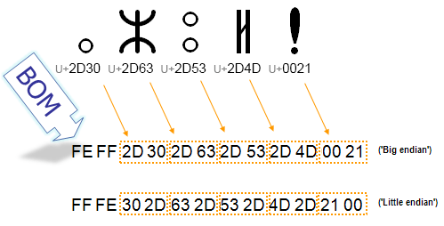
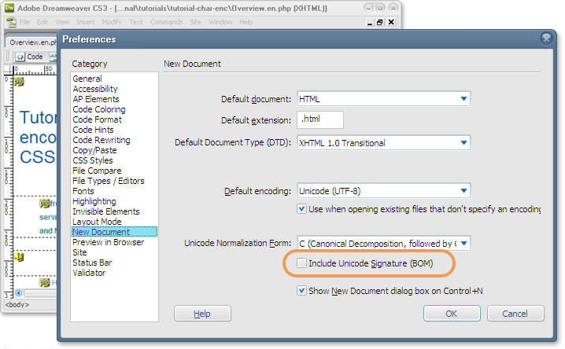

什么是字节顺序标记，在创建HTML时我需要了解什么？
字节顺序标记（Byte Order Mark），有时缩写为"BOM"，是一个特殊的Unicode字符，应该出现在文本文件的开头。它最初的目的是指示使用UTF-16或UTF-32字符编码的Unicode文本的字节序
。字节顺序标记其实是U+FEFF ZERO WIDTH NON-BREAKING SPACE，不过这个字符名称指的是该字符的另一个已弃用的用途。
一些系统在文件开头用BOM来指示文本文件使用UTF-8字符编码，尽管UTF-8不需要指示字节序。
虽然BOM通常是不可见的，只是为了帮助正确解释文本，但如果处理不当，BOM的存在有时会导致意外的显示问题或软件问题。
名称BYTE ORDER MARK（字节顺序标记）是原始字符名称ZERO WIDTH NO-BREAK SPACE（零宽度非断行空格，ZWNBSP）的别名。随着U+2060 WORD JOINER的引入，不再需要使用U+FEFF来实现其ZWNSP效果，因此从那时起，随着正式别名的出现，ZERO WIDTH NO-BREAK SPACE这个名字不再有用，所以我们在这里使用别名。
在1993年初引入UTF-8之前，传输Unicode文本的预期方式是使用16位代码单元，使用一种称为UCS-2的编码，后来扩展为UTF-16。16位代码单元可以用两种方式表示为字节：高位字节在前（大端序）或低位字节在前（小端序）。为了传达使用的字节顺序，人们在流的开始使用U+FEFF（字节顺序标记）作为幻数，而这个幻数在逻辑上不是流所表示文本的一部分。
下图显示了双字节字符序列中使用的字节。每两位十六进制数代表文本流中的一个字节。我们可以看到，对于大端序与小端序存储，表示单个字符的两个字节的顺序是相反的。字节顺序标记指示使用的顺序，以便应用可以立即解码内容。

在UTF-8编码中，BOM的存在不是必需的。与UTF-16编码不同，UTF-8编码的字符中没有其他字节序列的可能性。但是，BOM仍可能出现在UTF-8编码的文本中，要么作为编码转换的副产品，要么因为编辑器添加它来标记内容为UTF-8。在这种情况下，BOM通常被称为UTF-8签名。
大多数时候，你不必担心UTF-8中的字节顺序标记。有些编辑器（如Windows上的记事本）在你使用UTF-8编码保存文件时总是会添加BOM，而其他编辑器会为你提供选择。
在HTML5中，浏览器需要识别UTF-8 BOM并用它来检测页面的编码，主流浏览器的最新版本在用于UTF-8编码页面时会按预期处理BOM。
UTF-8 BOM提供可靠的编码检测，因为它极其简短且稳定，在XML和HTML中都有效，无论你的页面是否通过网络读取都有效（与HTTP声明不同）。但请记住，除了BOM之外，使用meta元素声明页面编码始终是一个好主意，这样查看源文本的人就能明显看到编码。
此外，有许多情况下BOM（特别是因为它是不可见的）可能会导致问题。有关这些问题的更多信息，请参阅下面的UTF-8 BOM的潜在问题部分。
如果你为页面使用UTF-16编码（我们强烈建议你不要这样做），还有一些额外的考虑。
使用BOM的必要性和建议根据所使用的Unicode编码方案而有很大差异。
对于UTF-8，BOM的字节序列是EF BB BF。与UTF-16和UTF-32不同，UTF-8没有字节序的问题，因此不需要BOM来实现此目的。它在UTF-8中的唯一功能是充当"签名"来指示文件的编码是UTF-8。Unicode标准允许在UTF-8中使用BOM，但不建议使用。
建议：最好避免在UTF-8文件中使用BOM，除非你有特定原因或兼容性要求。如果可能，始终首选不带BOM的UTF-8。
对于UTF-16，如果字符集标签没有定义特定的字节序（比如，如果仅标记为"UTF-16"），BOM对于指示字节序至关重要。
FE FF：指示大端序（UTF-16BE）。FF FE：指示小端序（UTF-16LE）。U+FEFF将显示为U+FFFE，这是一个非字符。与UTF-16类似，UTF-32中的BOM指示字节序，但UTF-32很少用于传输或Web内容。
00 00 FE FF：指示大端序（UTF-32BE）。FF FE 00 00：指示小端序（UTF-32LE）。你可以使用W3C国际化检查器来查明页面是否在开头或内容中的其他位置包含BOM。页面开头的BOM将在信息面板中报告。页面下方包含的BOM（通常由于从外部源向页面添加内容）将在详细报告部分中报告。
你可以尝试在编辑器中查找内容中的UTF-8签名，但如果你的编辑器正确处理BOM，你可能无法看到它。使用能够显示文件中十六进制字节值的二进制编辑器，UTF-8签名显示为EF BB BF。
如果你的编辑器或浏览器对带有BOM的UTF-8编码文件应用了错误的字符编码，你可能会在文件开头看到一系列字节。这些是组成BOM的字节，表示为这些字节在该编码中表示的字符。使用Latin 1（ISO 8859-1）字符编码，签名显示为。
你的编辑器也可能在状态栏或菜单中告诉你文件的编码，包括有关UTF-8签名存在与否的信息。例如，如果你在Dreamweaver中使用另存为，并且你的文件开头有BOM，你将在标记为"包含Unicode签名（BOM）"的框中看到复选标记。你还可以在首选项中指定（如下图）新文档是否应默认使用BOM。

以下是一些已知的字节顺序标记会导致问题的情况。
总的来说，随着人们采用更新版本的浏览器和编辑工具，这些问题正在消失。如果你的用户群仍在使用较旧的技术，了解这些问题是值得的。不过，这不只是遗留的问题。
在撰写本文时，如果你使用PHP在页面中包含某个外部文件，并且该文件以BOM开头，它可能会创建空行。
这是因为BOM在包含到页面之前没有被剥离，并且像占据一行文本的字符一样起作用。查看示例。在示例中，包含BOM的空行出现在包含文本的第一项上方。
你应该确保包含的文件不以BOM开头。
你可能还会发现BOM会给普通PHP页面带来问题。发送自定义HTTP标头时，设置标头的代码必须在输出开始之前调用。文件开头的BOM会导致页面在解释标头命令之前开始输出，并可能导致显示页面中的错误消息和其他问题。
在自动处理以BOM开头的文件的代码中，你需要考虑BOM。比如，在以BOM开头的文件开始处进行模式匹配时，你需要额外的代码来测试BOM的存在，如果找到则忽略它。
不带BOM的UTF-8编码具有这样的特性：仅包含US-ASCII范围内字符的文档与使用US-ASCII编码编码的同一文档以相同的字节对字节方式编码。这样的文档在编码为UTF-8或US-ASCII时都可以被处理和理解。添加BOM会插入额外的非ASCII字节，因此这不再成立。如果你有假设内容仅由US-ASCII字符组成的进程或脚本，你需要避免BOM。
HTML5引入的变化意味着在检测HTML页面的编码时，字节顺序标记会覆盖HTTP标头中的任何编码声明。当页面作者无法控制服务器的字符编码设置，或者不知道其影响，而服务器将页面声明为UTF-8以外的编码时，这可能非常有用。如果BOM的优先级高于HTTP标头，页面应该被正确识别为UTF-8。
在撰写本文时，并非所有浏览器都这样做，因此你不应该依赖所有页面读者都能从中受益。
以前版本的Internet Explorer给BOM优先于HTTP，但IE10和IE11给HTTP更高的优先级。
在HTTP标头仍然覆盖字节顺序标记的浏览器中，如果服务器将页面声明为具有非Unicode字符编码，你可能会在页面开头发现意外的字符（例如在HTTP中标记为ISO 8859-1的页面中的），以及在页面上显示非ASCII字符的问题。
你也应该检查网站的后端技术是否能够识别和处理BOM。
我们强烈建议你不要将UTF-8文件的编码从Unicode编码更改为非Unicode编码，但如果你这样做（出于某些特殊原因），你必须确保删除BOM。如果你不这样做，浏览器要么会继续将你的内容视为UTF-8，要么你会在页面开头看到奇怪的字符。
如果你需要删除BOM，请检查你的编辑器是否允许你指定在保存文件时是否添加或保留UTF-8签名。这样的编辑器提供了一种通过简单地读入文件然后再次保存来删除签名的方法。例如，在Windows上的Notepad++和Mac上的TextWrangler等编辑器中，可以在使用另存为功能时从列表中选择编码。该列表有选项可以保存为带有或不带有BOM的UTF-8。只需选择不带BOM的选项并保存即可。
使用脚本的好处之一是你可以快速删除签名，并且可以从多个文件中删除。脚本可以作为你流程的一部分自动运行。
注意：你应该检查删除签名的影响。可能你的内容开发流程的某些部分依赖于使用签名来指示文件是UTF-8编码的。还要记住，具有高比例拉丁字母的页面可能表面上看起来正确，但ASCII范围（U+0000到U+007F）之外的偶尔字符可能被错误编码。
本节主要为那些使用UTF-16或UTF-32编码HTML页面的人提供进一步的详细信息。强烈建议所有HTML内容都应该使用UTF-8而不是UTF-16或UTF-32。
对于UTF-16，如"何时使用/不使用BOM"一节所述，如果页面仅用IANA字符集"UTF-16"标记来指示字节序，BOM是合适的。但是，如果字符编码通过HTTP明确声明为"UTF-16LE"或"UTF-16BE"，则不应使用BOM。这与RFC 2718和Unicode标准的建议一致。
请注意，这仅涉及内容的标记。当然，实际的字节序列是相同的，无论你将内容标记为UTF-16并添加BOM，还是将其标记为UTF-16LE或UTF-16BE。
HTML5规范目前不允许对使用UTF-16的页面使用任何其他基于文本的文档内编码声明（如meta标签）。实际上，如果你使用通用的"UTF-16"标签，BOM本身就充当必要的流内字节顺序声明。
类似地，对于UTF-32，如果内容被标记为"UTF-32"，则可以使用BOM。如果标签明确为"UTF-32BE"或"UTF-32LE"，则不应使用BOM。但是，强烈不建议将UTF-32用于HTML内容，一些实现已经删除了对它的支持。
入门？参见字符集和编码介绍
相关链接：编写网页